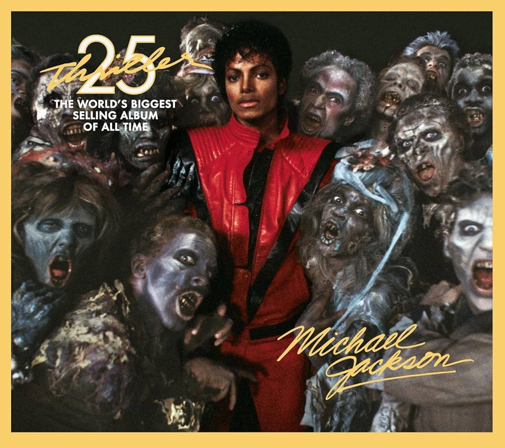
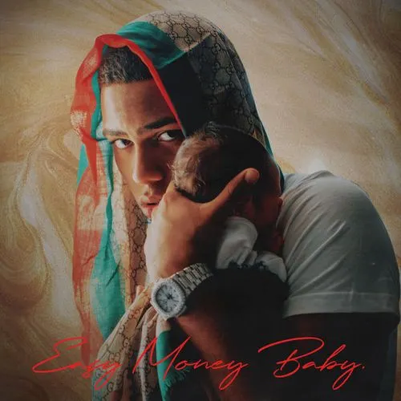

POP MUSIC
Thriller
Beat It
Fusión de pop y rock. Solo de guitarra épico. Mensaje anti-violencia.
Thriller
Tema principal con video de terror narrado por Vincent Price. Revolucionó los videoclips.
Wanna Be Startin' Somethin'
Ritmo afro-funk. Estribillo famoso: “Mama-say mama-sa mama-coo-sa”.
Billie Jean
Clásico del pop con bajo inolvidable. Lanzó el “moonwalk”.
MUSIC
Álbum: Easy Money Baby
MIB
Canción MIB (Álbum: Easy Money Baby).
Myke presume su éxito y estilo de vida sigiloso.
Una canción de poder con tono oscuro.
Diosa
Canción Diosa (Álbum: Easy Money Baby).
Tema romántico donde admira a una mujer empoderada.
Reguetón suave y seductor.
Girl
Canción Girl (Álbum: Easy Money Baby).
Canción coqueta en Spanglish.
Con vibra tropical y relajada.
Piensan
Canción Piensan (Álbum: Easy Money Baby).
Reflexiva, habla de cómo lo ven los demás.
Y su vida en la fama.